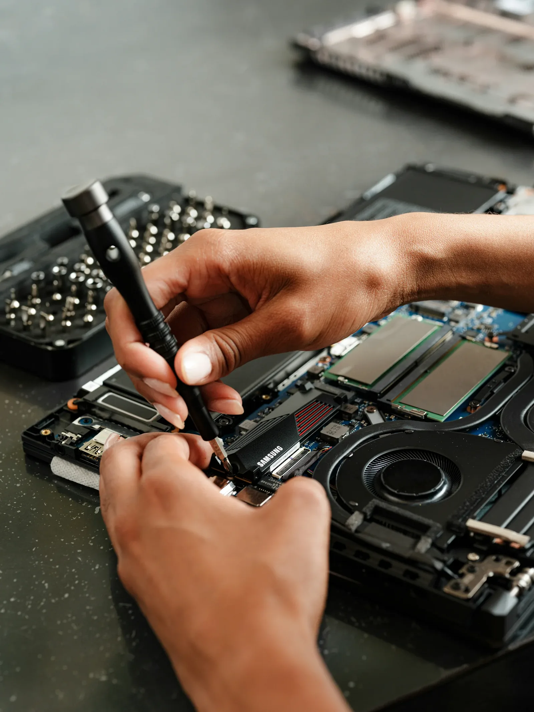
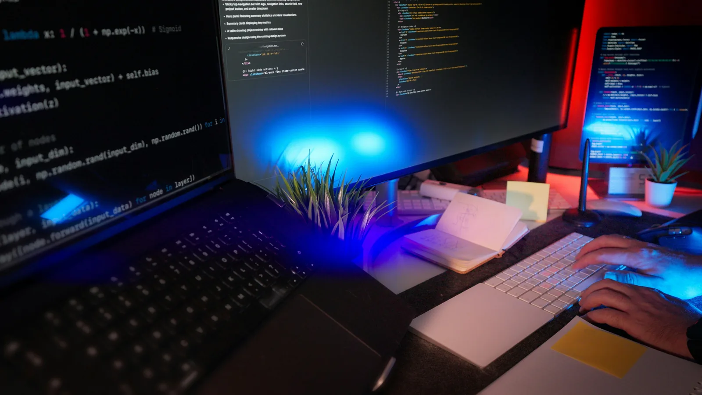
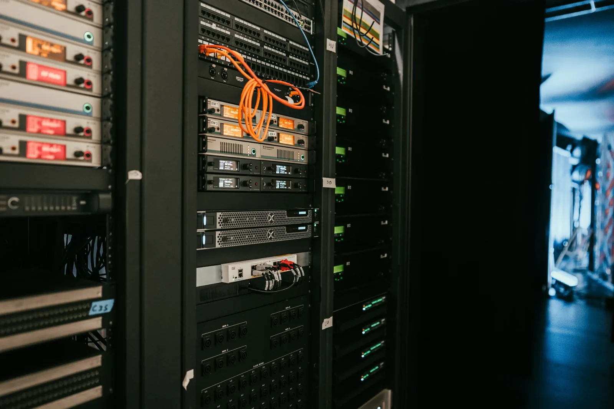
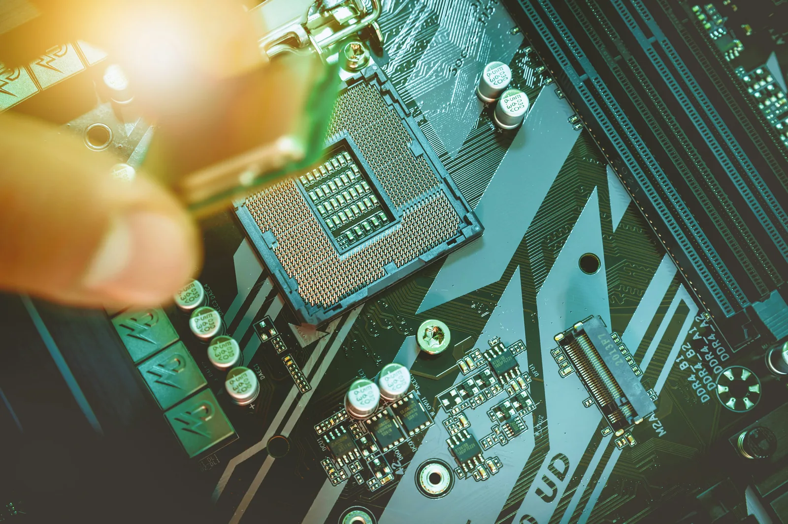
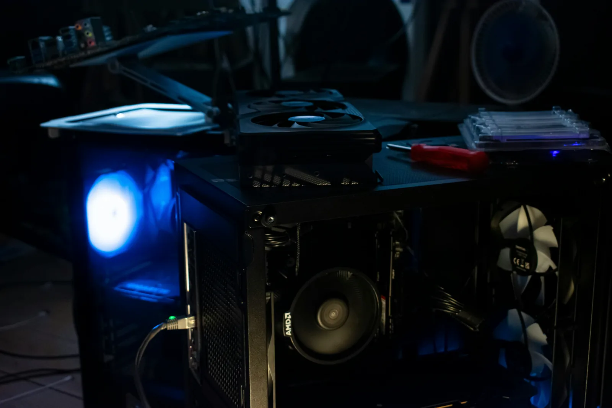
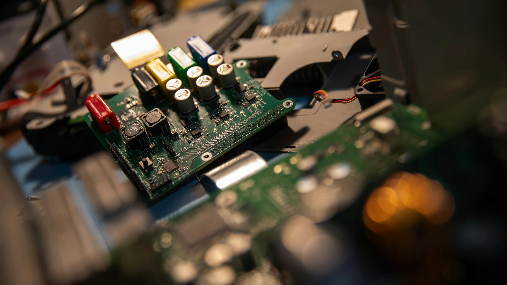
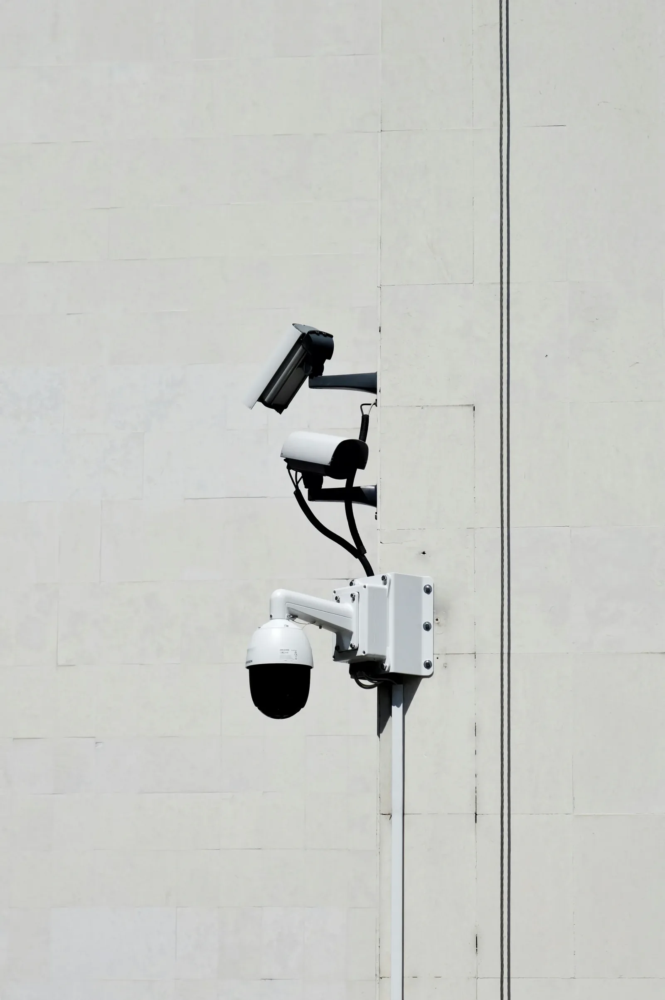
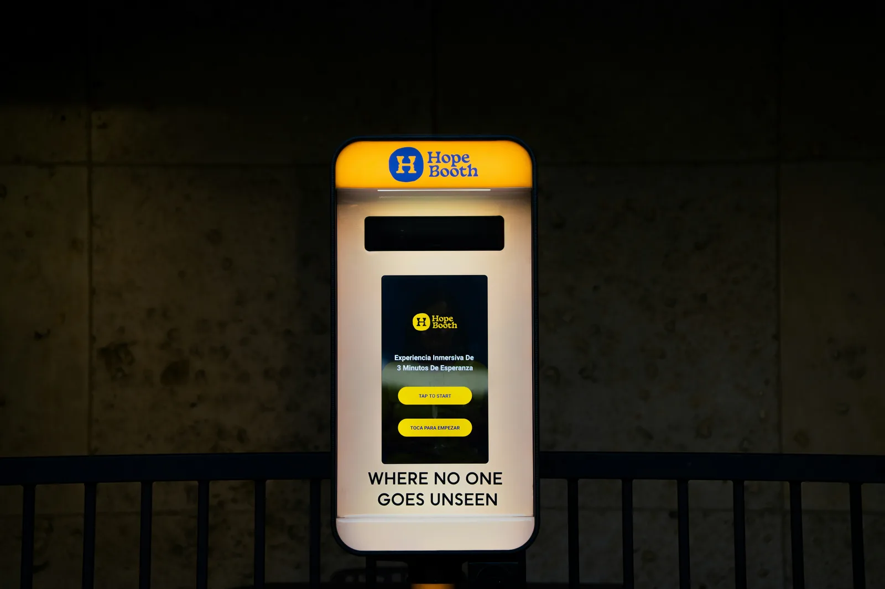

SERVICIO TÉCNICO PC EN ROSARIO · SOLUCIONES PARA EMPRESAS
Tecnología que mantiene todo en movimiento.
Reparamos computadoras, mantenemos equipos e infraestructura y construimos software que conecta la operación de tu empresa. Hardware + software + automatización, en un mismo equipo.
Diagnóstico realA domicilioParticularesEmpresas



PULSEDESK / ONLINERosario · Santa Fe
01 / PULSEDESK
UNA EMPRESA DE TECNOLOGÍA, NO UN SERVICE IMPROVISADO
Entendemos la máquina.
Entendemos el sistema.
Entendemos tu operación.
PulseDesk une dos mundos que normalmente están separados: soporte técnico e infraestructura con desarrollo de software y automatización.
Podemos resolver una PC que no arranca, mejorar diez puestos de trabajo, ordenar una red, instalar cámaras o diseñar un sistema completo para ventas, stock, logística y administración. La idea es simple: que la tecnología deje de ser un problema y empiece a trabajar a favor de tu negocio.
02 / SERVICIO TÉCNICO PC
Primero entendemos
qué está fallando.
Servicio técnico de computadoras en Rosario para hogares, profesionales y empresas. Diagnóstico, reparación, mantenimiento y upgrades de hardware con procesos claros.



MEMPASS0 ERR
NVMe98%SMART
CPU64°LOAD
01/04
DIAGNÓSTICO
No cambiamos piezas al azar.
Revisamos síntomas, alimentación, temperaturas, memoria, discos, estabilidad y estado general. La prioridad es encontrar la causa real antes de recomendar una reparación o compra.
- PC que no enciende
- Reinicios y pantallas azules
- Equipos lentos o congelados
- Errores intermitentes
- Diagnóstico de fuente, RAM, disco y placa
MANTENIMIENTO
Temperaturas controladas. Equipo limpio.
El polvo y una mala disipación terminan afectando rendimiento y vida útil. Hacemos mantenimiento interno y puesta a punto térmica con criterio técnico.
- Limpieza interna completa
- Cambio de pasta térmica
- Revisión de coolers
- Flujo de aire y temperaturas
- Mantenimiento preventivo
UPGRADES
Más rendimiento sin reemplazar todo.
Evaluamos qué componente realmente limita el equipo y proponemos mejoras compatibles, equilibradas y útiles para el uso real.
- SSD SATA y NVMe
- Ampliación de memoria RAM
- Fuentes de alimentación
- GPU y almacenamiento
- Armado y actualización de PC
PRUEBAS
Se entrega probado, no “parece que anda”.
Después de intervenir el equipo comprobamos temperaturas, estabilidad, memoria, almacenamiento, drivers y funcionamiento general antes de cerrar el trabajo.
- Pruebas de estabilidad
- SMART y salud de discos
- Memoria y errores
- Temperaturas bajo carga
- Chequeo final de hardware
HARDWARE / TODO LO QUE RESOLVEMOS
Desde una mejora simple hasta una puesta a punto completa.
SSD y NVMe
Instalación, migración, clonación y mejora de velocidad.
Memoria RAM
Diagnóstico, compatibilidad, ampliación y reemplazo.
Fuentes
Fallas de alimentación, reemplazo y dimensionamiento.
Procesador y térmicas
Pasta térmica, refrigeración y control de temperaturas.
Placas de video
Instalación, drivers, alimentación y estabilidad.
Motherboard
Revisión de placa, BIOS, conectividad y componentes.
Armado de equipos
Selección, ensamblado, cableado y configuración inicial.
Periféricos
Monitores, impresoras, almacenamiento y accesorios.
03 / SOFTWARE PARA TU PC
El hardware puede estar perfecto.
El sistema también tiene que estarlo.
Solucionamos problemas de Windows, drivers y programas; dejamos el equipo limpio, actualizado, protegido y preparado para trabajar.
WindowsInstalación, formateo, actualización y reparación.
DriversChipset, video, audio, red, impresoras y periféricos.
Office / Microsoft 365Instalación y configuración con licencias válidas.
Virus y malwareRevisión, limpieza, antivirus y protección.
BackupsRespaldo, migración de datos y recuperación básica.
OptimizaciónInicio, procesos, espacio, actualizaciones y estabilidad.
PULSEDESK / PC-CHECKONLINE
01
Sistema operativoIntegridad · updates · configuración
LISTO02
DriversChipset · video · red · audio
LISTO03
AplicacionesOffice · utilitarios · herramientas
LISTO04
SeguridadMalware · antivirus · permisos
LISTO100%
04 / SOPORTE IT PARA EMPRESAS
Cuando hay diez equipos, una red y una operación,
ya no alcanza con “arreglar una PC”.
Ayudamos a empresas, oficinas y comercios con soporte informático, mantenimiento de puestos, redes, conectividad y videovigilancia. Vamos a domicilio para trabajar donde está el problema.

Mantenimiento de puestosRedes LAN / Wi‑FiRouters y switchesImpresorasBackupsCámaras IP / CCTVAcceso remotoSoporte a usuarios
05 / DE SOPORTAR TECNOLOGÍA A CONSTRUIRLA
No sólo mantenemos
lo que ya existe.
También construimos lo que falta.
Cuando el problema ya no es una computadora sino un proceso manual, información duplicada o sistemas que no se hablan entre sí, entra nuestro equipo de desarrollo.
06 / DESARROLLO DE SOFTWARE
Software diseñado alrededor
de cómo trabaja tu empresa.
No vendemos una plantilla y tratamos de forzar tu operación. Entendemos el proceso, diseñamos la solución y conectamos las piezas.

orders.service
POST /api/orders
201 CREATEDOPERACIÓNCONNECTEDventas · stock · logística
01/04
SOFTWARE A MEDIDA
Cuando Excel, WhatsApp y cinco sistemas ya no alcanzan.
Construimos aplicaciones web, de escritorio y móviles para centralizar procesos, usuarios, datos y operación.
- Sistemas de gestión
- ERP
- POS y ventas
- Clientes y cuentas corrientes
- Dashboards y reportes
OPERACIÓN
Ventas, stock, facturación y logística hablando entre sí.
Diseñamos flujos completos: una venta puede descontar stock, generar un pedido, avisar a logística y actualizar un tablero sin carga duplicada.
- Facturación y stock
- Multi-caja
- Pedidos y logística
- Trazabilidad y lotes
- E-commerce B2B
AUTOMATIZACIÓN + IA
Lo repetitivo no debería consumir horas de una persona.
Automatizamos tareas, notificaciones, reportes, consultas y decisiones simples conectando APIs, bases de datos, WhatsApp e inteligencia artificial.
- Chatbots y asistentes
- Automatizaciones
- IA con datos de empresa
- Integraciones API
PANTALLAS + TÓTEMS
El software también puede salir de la oficina.
Desarrollamos interfaces para pantallas, kioscos y tótems: autoservicio, publicidad digital, turnos, pedidos, estados de producción o logística.
- Tótems de autoservicio
- QR y medios de pago
- Pantallas de recepción
- Cartelería digital
- Monitores de logística
LO QUE SABEMOS CONSTRUIR
De una idea a un sistema
que realmente se usa.
Estas son soluciones que forman parte de nuestro campo real de trabajo, no una lista de palabras de moda.
ERP y gestión
Ventas, productos, clientes, compras, stock, caja, cuentas corrientes, permisos y reportes.
Sistemas de venta
Multi-caja, medios de pago, tickets, listas de precios, lectores de código y facturación.
Pedidos y logística
Pedidos conectados a monitores de preparación, estados, despacho y seguimiento.
Trazabilidad
Materias primas, fórmulas, producción, lotes, vencimientos, temperaturas y auditoría.
Chatbots
Atención, consultas, pedidos, cobranzas y asistentes conectados con información real.
Automatizaciones
Tareas programadas, alertas, reportes, integraciones y flujos sin carga manual repetitiva.
IA empresarial
Consultas sobre datos, clasificación, análisis, generación de informes y asistentes internos.
Tótems y pantallas
Autoservicio, QR, publicidad, pantallas de pedidos, tableros y cartelería digital.
UN EJEMPLO SIMPLE
Una venta.
Cinco áreas actualizadas.
La diferencia entre “tener programas” y tener una operación conectada está en lo que sucede después de hacer clic.
Desarrollo de software en Rosario ↗SERVICIO TÉCNICO PC ROSARIO / PREGUNTAS FRECUENTES
Lo que necesitás saber
antes de escribirnos.
¿Hacen servicio técnico de PC a domicilio en Rosario?+
Sí. Atendemos consultas para hogares, oficinas, locales y empresas. Según el tipo de falla podemos resolver en el lugar o coordinar el retiro/intervención que corresponda.
¿Reparan computadoras de empresas?+
Sí. Además de reparación puntual podemos hacer mantenimiento de varios equipos, puesta a punto, instalación de puestos, impresoras, redes y soporte a usuarios.
¿Instalan SSD, NVMe y memoria RAM?+
Sí. Primero revisamos compatibilidad y estado general del equipo. También podemos migrar el sistema y los datos para aprovechar el upgrade sin empezar de cero.
¿Trabajan con Windows, drivers, Office y antivirus?+
Sí. Instalamos y configuramos Windows, drivers, Microsoft 365/Office con licencia válida, herramientas, antivirus, impresoras y utilitarios necesarios para el trabajo diario.
¿Desarrollan sistemas a medida para empresas?+
Sí. Desarrollamos ERP, sistemas de gestión, ventas, stock, facturación, logística, trazabilidad, e-commerce, dashboards, chatbots, automatizaciones e integraciones.
¿Pueden conectar WhatsApp, ventas, stock y logística?+
Sí. Ese tipo de integración es justamente uno de los enfoques de PulseDesk: evitar duplicación de tareas y hacer que la información fluya entre áreas automáticamente.
HABLEMOS DE LO QUE NECESITÁS RESOLVER
¿Tu PC falla, necesitás soporte
o querés modernizar tu empresa?
Contanos qué está pasando. Puede ser una computadora, una oficina completa o una idea de software: empezamos por entender el problema.
CONTACTANOS POR WHATSAPP+54 341 601 8944PulseDesk · Rosario, Santa Fe